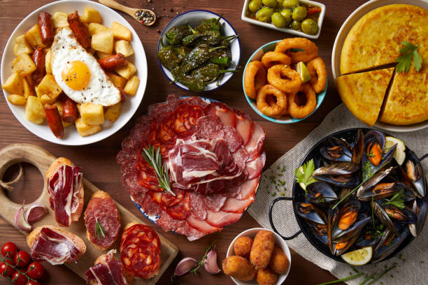
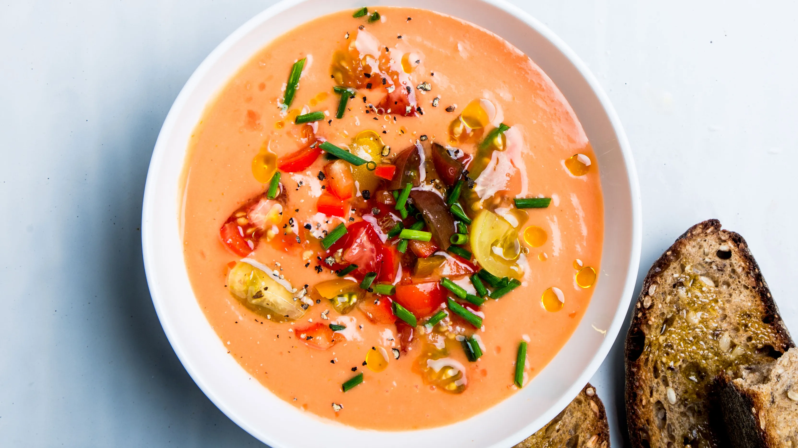
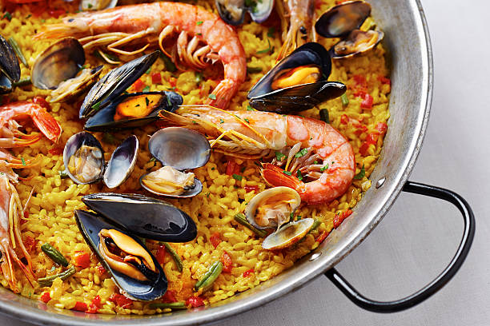

You Don't Know What To Cook Today?
Spanish Culinary Culture
Spanish food is basically folk food. Although Spain was a country ruled by the kingdom for many years, the taste for food did not spread from the palace downwards. Spanish cuisine is famous for its dishes made with olive oil, which are more spicy than other European cuisines. In addition, each region in Spain has its own specialities.
In this context, Spanish cuisine consists of eight major regional cuisines; Basque, Andalusia, Galicia, Canary, Castile, Catalonia, Majorca, Valencia.
Gazpacho
Gazpacho is a classic of Spanish cuisine, made from fresh vegetables and served cold. Although Spain is the homeland of this soup, it is also very common in Portugal. The Portuguese call this soup "gaspacho". Gazpacho is both a storehouse of vitamins and satiating. Due to its cooling effect, it is mostly consumed in summer months. It is preferred because it does not require cooking and is practical to make.
- 4 large fresh tomatoes, peeled and diced
- ½ English cucumber, peeled and finely diced
- ½ cup finely diced red bell pepper
- ¼ cup minced green onion
- 1 large jalapeño pepper, seeded and minced
- 2 cloves garlic, minced
- 1 teaspoon salt
- ½ teaspoon ground cumin
- 1 pinch dried oregano
- 1 pinch cayenne pepper, or to taste
- freshly ground black pepper to taste
- 1 pint cherry tomatoes
- ¼ cup extra-virgin olive oil
- 1 lime, juiced
- 1 tablespoon balsamic vinegar
- teaspoon Worcestershire sauce
- salt and ground black pepper to taste
- 2 tablespoons thinly sliced fresh basil
What You Need?
Paella
Paella, which has come from ancient times to the present day with its originality and has a rich list of ingredients, is indispensable for the Sunday lunch tables of the Spaniards. Although there are varieties prepared with meat types such as rabbit, chicken and snails, the original form contains a lot of seafood. The favourite Paellas made with seafood include various sea creatures such as shrimps, mussels, oysters, crabs and lobsters.
- 4 tablespoons olive oil
- 1 onion, chopped
- 2 cloves garlic, minced
- 1 red bell pepper, chopped
- 4 ounces Spanish chorizo (cured spiced pork sausage), casing discarded and sausage cut into 1/4-inch dice
- 2 skinless, boneless chicken breast halves - cut into 1 inch cubes
- 1 (12 ounce) package uncooked Arborio rice
- 5 cups chicken broth
- ½ cup white wine
- 1 sprig fresh thyme
- 1 pinch saffron
- salt to taste
- ground black pepper to taste
- 2 squid, cleaned and cut into 1 inch pieces
- 2 tomatoes, seeded and chopped
- ½ cup frozen green peas
- 12 large shrimp, peeled and deveined
- 1 pound mussels, cleaned and debearded
- ¼ cup chopped Italian flat leaf parsley
- 8 slices lemon, for garnish
What You Need?
Churros

Churros are a type of fried dumpling in Spanish cuisine. The word "churro" means "fried" in Spanish. The favourite dessert of the Spaniards, which takes its friedness exactly from its name, is a very popular dessert first in Spain and then in Latin America, Portugal and France. It is usually eaten for breakfast and dipped in chocolate, jam, sugar or different sauces.
- 1 cup of water
- 2 tbsp of butter
- 2 tbsp white sugar
- 1/2 tsp of salt
- 160g All Purpose Flour
- 2 pcs. eggs
- Cooking oil for frying
- 1/2 cup of white sugar
- 1 tsp. of cinnamon powder